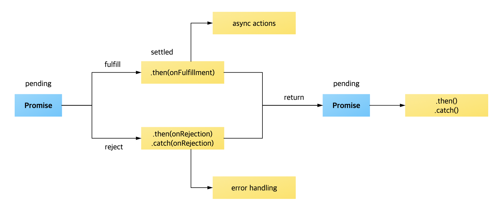

Contents
Promise 란?
Promise 는 ES6 명세에 추가된 비동기 처리를 위한 표준 내장 객체로 비동기 처리에 대한 상태(대기, 완료, 실패)와 결과값을 가지는 객체입니다.

비동기 처리 : Callstack 에 쌓여 동기적으로 실행되지 않는 코드를 말합니다. setTimeout, dom 에 바인딩된 콜백 함수, ajax 요청등이 비동기 처리의 대표적인 예입니다.
Promise 상태
Promise 객체는 비동기 처리에 대한 상태를 가집니다.
개념상 이행되지 않은 상태와 이행 또는 거부 완료된 상태로 분류할 수 있으며 실제로 이행되지 않고 대기중인 상태는 pending, 이행된 상태는 fulfilled, 거부된 상태는 reject 가 됩니다.
| 상태 | 구분 | 의미 |
|---|---|---|
| pending | pending | 비동기 처리가 완료되기 전 상태 |
| fulfilled | settled | 비동기 처리가 성공적으로 완료된 상태 |
| rejected | settled | 비동기 처리가 실패로 완료된 상태 |
pending 상태에서 settled 상태로 변경되면 더이상 값도 상태도 변경되지 않으며 then 메서드에 의해 대기열에 올라 처리됩니다.
Promise 처리 메소드
Promise 객체는 생성되는 시점에는 알수 없는 값, 즉 비동기 처리를 위한 연산이 종료된 이후의 값을 처리하기 위한 then, catch, finally 와 같은 함수를 제공하며 then, catch 메서드는 Promise 객체를 반환하기 때문에 Chaning이 가능합니다.
then
Promise.prototype.then 은 Promise 가 이행된 settled 상태가 되면 실행됩니다.
아래와 같은 매개변수를 가지며 이행 상태에 따라 매개변수에 지정된 함수를 실행하게 됩니다.
- onFulfilled : Promise가 수행될 때 호출되는 Function으로, 이행 값(fulfillment value) 하나를 인수로 받습니다.
- onRejected : Promise가 거부될 때 호출되는 Function으로, 거부 이유(rejection reason) 하나를 인수로 받습니다.
1 | // onFulfilled 실행 |
Promise 가 fulfilled 상태이거나 rejected 상태일 때, 각각에 해당하는 핸들러 함수(onFulfilled, onRejected) 가 실행되며 settled 상태와 함께 함수가 반환하는 값을 가지는 Promise 객체를 반환합니다. 값을 반환하지 않을 경우 fulfilled 상태와 함께 undefined 를 값으로 가지는 Promise 객체를 반환합니다.
catch
Promise.prototype.catch 는 Promise 수행 결과의 상태가 rejected 인 경우에만 실행됩니다. Promise.prototype.then(undefined, onRejected) 코드와 동일하며 실제로 catch 도 내부적으로 해당 코드를 호출합니다. fulfilled 상태를 가진 Promise 객체를 반환하며 Promise 를 반환하기 때문에 Chaning 이 가능합니다.
finally
Promise.prototype.finally 는 Promise 수행 결과에 상관없이 Promise 가 처리된 후 무조건 실행을 보장하는 메서드이며 이전 Promise 객체를 그대로 반환합니다. 특징은 Promise 수행 여부를 알 수 없기 때문에 다른 처리 메서드와는 달리 어떤 arguments 도 받지 않습니다.
Promise 정적 메소드
Promise 객체는 임의로 상태를 만들거나 비동기 함수를 병렬로 처리하는등 Promise 를 좀더 효율적으로 작성할 수 있는 resolve, reject, all, race 와 같은 static 메소드를 제공합니다.
resolve
Promise.resolve 는 fulfilled 상태를 가지는 Promise 객체를 반환합니다. 값이 then 가능한 (즉, then 메서드가 있는) 경우, 반환된 프로미스는 then 메서드를 따라가고 마지막 상태를 취합니다. 그렇지 않은 경우 반환된 프로미스는 주어진 값으로 이행합니다.
reject
Promise.reject 는 rejected 상태를 가지는 Promise 객체를 반환합니다.
all
Promise.all(iterable) 은 Promise 담겨 있는 이터러블을 인자로 전달 받고 전달받은 Promise 를 병렬로 처리합니다.
iterable 내 모든 Promise 가 setteld 상태가 되면 Promise 객체를 반환하지만 iterable 내 Promise 중 하나라도 rejected 상태를 반환하는 경우 즉시 rejected 상태를 가지는 Promise 를 반환합니다.
race
Promise.race(iterable) 는 iterable 내 어떤 Promise 든 setteld 상태가 되는 즉시 Promise 객체를 반환합니다.
allSettled
2020 12월 현재 TC39 Stage 4 Draft 에 올라와 있습니다.
Promise.allSettled(iterable) 는 all 과는 달리 인자로 받은 iterable 내 Promise 의 rejected 상태와 무관하게 모든 Promise 의 상태가 settled 가 될 때 까지 기다리며, fulfilled, rejected 결과를 가지는 Promise 객체를 배열로 반환합니다.
End
Promise 를 잘 알고 있으면 이를 활용한 다양한 비동기 처리 구현 방식을 고민해 볼 수 있어 가독성이 좋고 예외 처리등 효율성이 높은 코드를 작성할 수 있습니다. 사실 평소 자주 사용하던 Promise 인데 then, catch 외 나머지 스펙은 잘 모르다보니 제한적인 코드를 작성하게 되어 명세를 훑어보는 느낌으로 정리해 봤습니다.
참고로 async, awiat 로 Promise 를 대부분 대체할 수도 있고 대부분의 경우로 가독성 높은 코드 작성이 가능하나 Promise 를 알고 함께 활용하면 더 좋은 코드를 고민할 수 있기 때문에 비동기 처리가 많은 개발자라면 꼭 알아두시길 권장합니다.
궁금한 점이나 잘 못된 내용이 있으면 피드백 부탁드립니다.
읽어주셔서 감사합니다.